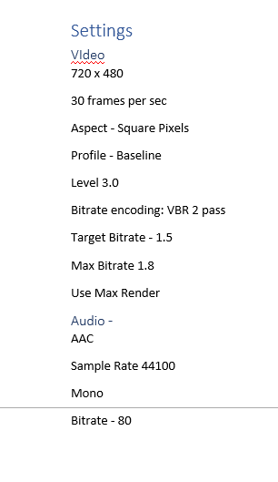

First you make folder called My Github Website, then in that folder add one called CSS, and Images. Then you need to make an Index and get some code frome W3schools and put it in Index
How to encode a video using Adobe Media Encoder
First you film a 30 second video, then you put it in Adobe Media Encoder, And follow the directions on the photo, and put photo in your folder.
